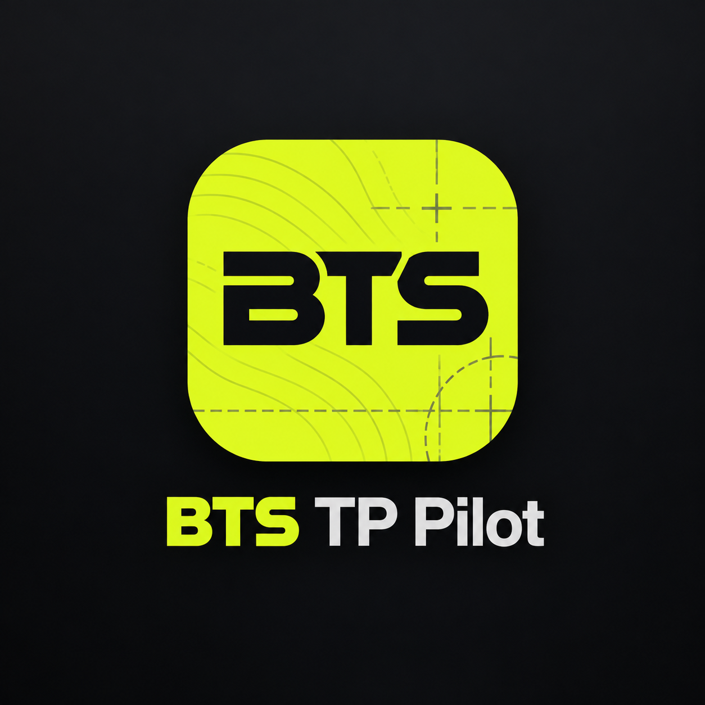

Mardi U5 · Jeudi U8 · Vendredi U6 par défaut, échangeable avec U7.
Tu peux rechercher dans plusieurs dossiers ou Drives. BTS andy reste prioritaire.
Nécessaire pour que l’application hébergée sur GitHub Pages puisse rechercher dans tes fichiers privés.
Les données restent dans le navigateur. Exporte une sauvegarde régulièrement.
La clôture archive les deux années complètes de la promotion. Rien n’est perdu : la progression reste générable à tout moment depuis les archives.